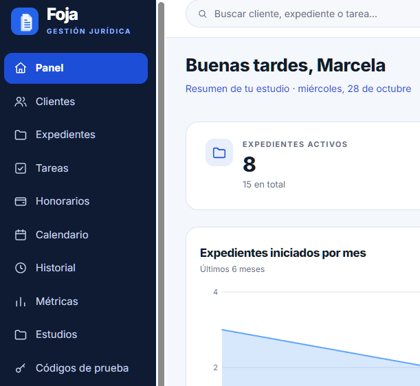

ARsuma, la red de puntos de Tucumán
Los clientes suman puntos comprando en los comercios de la red y los canjean por premios. Cada comercio tiene su panel, y la Federación Económica de Tucumán ve las métricas de toda la red.
Visitar ARsuma ↗Programadora Full Stack de Tucumán. Hago sistemas de gestión, páginas web y apps para negocios reales, desde la base de datos hasta la última animación.
↳ Agarrá la credencial y tirala · tocala para darla vuelta
Diseño y desarrollo con la misma dedicación: sistemas sólidos por dentro, cuidados en cada detalle por fuera.
Ahora mismo
Lo que tengo entre manos esta temporada. Se actualiza a medida que avanzo.
Los clientes suman puntos comprando en los comercios de la red y los canjean por premios. Cada comercio tiene su panel, y la Federación Económica de Tucumán ve las métricas de toda la red.
Visitar ARsuma ↗Presentamos nuestro proyecto en equipo.
Tecnicatura Universitaria en Programación, UTN.
Gestión de clientes, casos y tareas para estudios jurídicos, con ASP.NET Core y React.
Landing pages, sitios y sistemas para negocios, junto a un equipo de vendedoras.
Bitácora
Proyectos
Desde sitios para negocios hasta sistemas con login, base de datos y API propia.
Caso de estudio · Foja
Empezó como un proyecto propio y hoy está pensado para que varios estudios lo usen a la vez.
Reunir en un solo lugar clientes, expedientes, tareas, vencimientos y honorarios, y que cada abogado sepa qué tiene pendiente.
Cada expediente reúne sus movimientos, tareas y documentos adjuntos, con un historial completo de todo lo que fue pasando.
Inicio de sesión protegido con tokens y recuperación de contraseña mediante un código de verificación que llega por mail.

Decisión de diseño
Lo convertí en multi-estudio: todos usan la misma aplicación y el mismo servidor, pero cada estudio ve solo su información, filtrada automáticamente según la sesión.
Módulos
Lo que viene
Asistente virtual, CRM, recordatorios por WhatsApp y un portal para que los clientes sigan su caso.
Contacto
Escribime y lo charlamos. Hago sistemas de gestión, páginas web y apps para negocios.